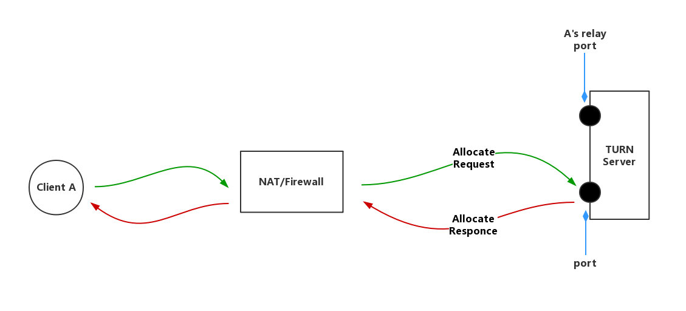
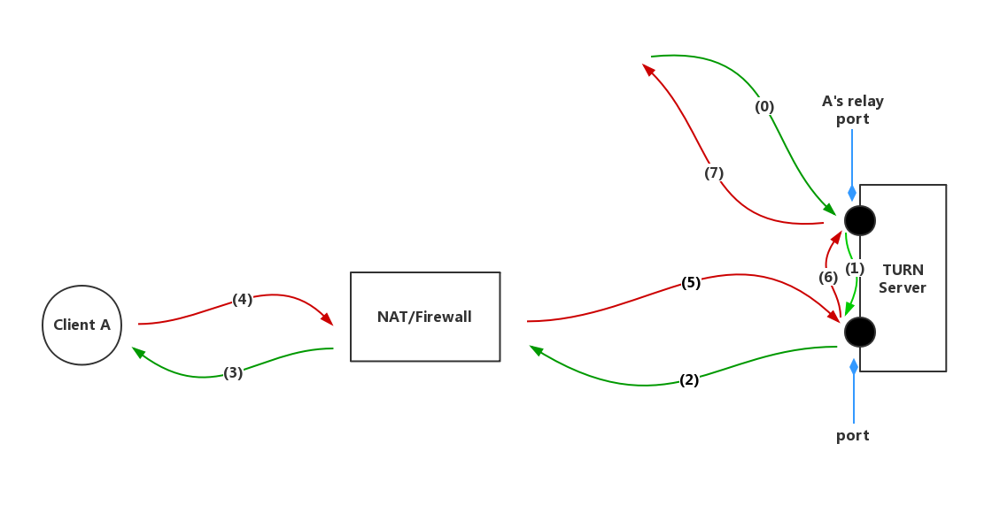
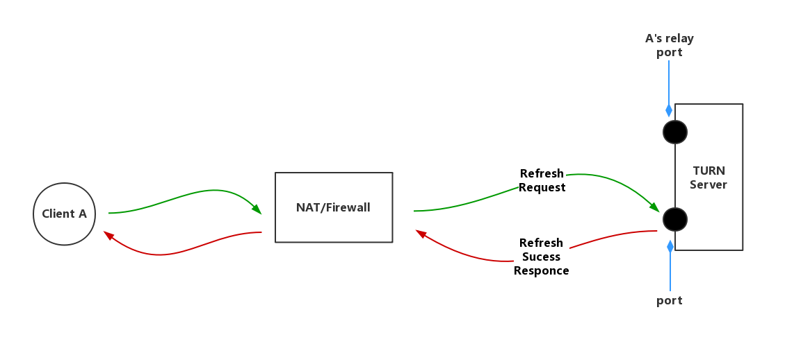
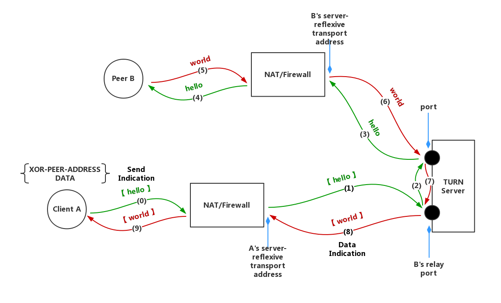
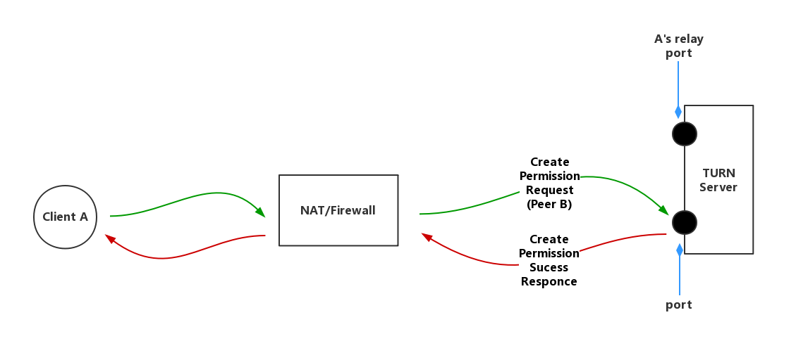
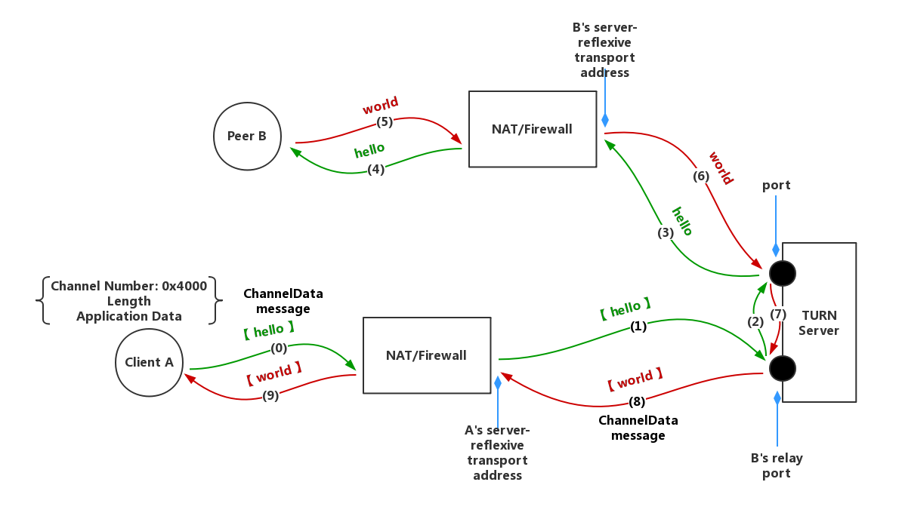
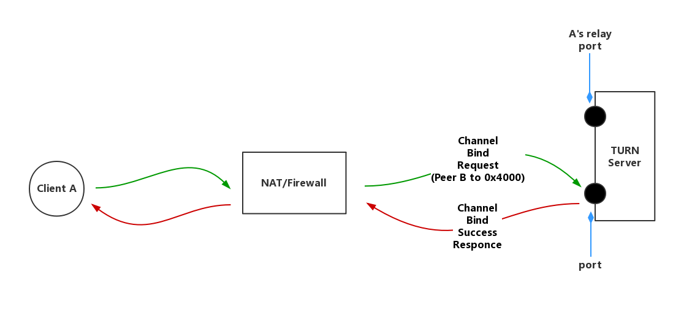

1. Allocate

客户端发送Allocate请求给TURN服务器，请求服务器为A客户端开启一个relay端口
若该请求不含验证信息，服务端回复error responce
客户端收到错误请求的回复后，携带验证信息再次请求
若请求被成功响应，服务端回复的response中包含XOR-RELAYED-ADDRESS属性，是分配给客户端的relay端口的异或结果
客户端A获得一个公网IP作为relay address，所有传递给A的信息都要发送到此地址
2. Forward

与客户端A建立连接的其他客户端，应先将信息发送到A的relay端口，再由TURN服务器通过其他端口发送给A
A回复信息时，原路返回
3. Refresh

服务端分配的relay address具有一定的时长，为了长期有效，客户端需发送refresh请求刷新剩余时间
服务端响应消息中含有Life Time属性，表示relay address剩余时间
客户端可以在存活期内调用REFRESH请求
服务端受到REFRESH请求后，刷新relay address剩余时间
当REFRESH请求中的LifeTime属性为0时，Client主动要求关闭relay地址
4. Send / Data Mechanism

client与peer通过TURN server有两种方式交换信息，一种是通过Send/Data Indication，一种是通过Channels
Send Indication告知TURN服务器哪个peer接受信息，Data Indication告知client信息来自于哪个peer
Send/Data Indication都对原始裸数据包进行封装，即添加STUN头部，如(0),(8)
其中Send Indication含XOR-PEER-ADDRESS和DATA属性，前者指定peer的反射地址，后者指定信息
再次其强调，Client A发送信息给Peer B要先发送到B的relay address

Send/Data Indication是不支持验证的，为了防止攻击, TURN要求client在给对等端发送indication之前先安装一个到对等端的许可
关于创建许可，Client A发送关于Peer B的create permission request到TURN服务器，并收到创建成功的responce
5. Channels Mechanism

信道机制是client与peer通过TURN server有两种方式交换信息的另一种方式
Send/Data Indication中多加的36字节信息会加重客户端和服务端之间的带宽压力，所以该方法使用另一种数据包格式ChannelData message
ChannelData message不使用STUN头部，使用一个4字节的头部,包含了一个称之为信道号的值(channel number)，每个信道号都与一个特定的Peer绑定，作为对等端地址的一个记号

要将一个信道与对等端绑定,Client发送一个信道绑定请求到服务器,并且指定一个未绑定的信道号以及对等端的地址信息
信道绑定存在默认时间，Client可以通过重新发送刷新请求来刷新剩余时间
和Allocation不同的是，信道绑定没有直接删除绑定的方法，只能等待其超时自动失效